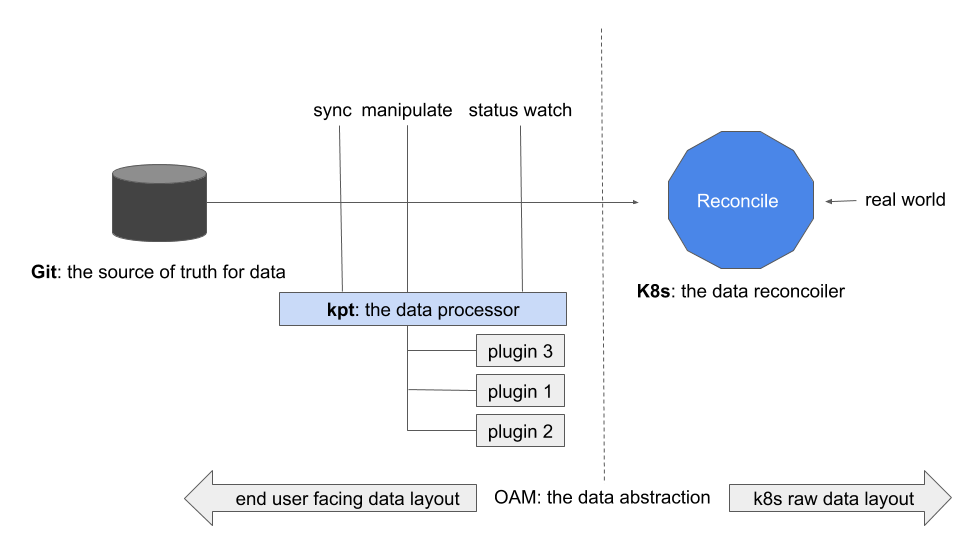

Open Application Model (OAM)
This guidance will demonstrate how to use kpt to manage custom Kubernetes applications (i.e. apps defined by CRDs instead of raw Kubernetes workloads).
We will use Open Application Model(OAM) to describe the app for standardization and portability consideration. But you are free to use any Custom Resource to describe your application as well. Crossplane will be installed as the OAM runtime for Kubernetes.
What is kpt and what is OAM
Both kpt and OAM are outcomes of “Configuration-as-Data (or, Infrastructure-as-Data, IaD)”.
Pioneered by Kubernetes community, Configuration-as-Data emphasizes that “configuration should be treated as data and leverage pipelines for manipulation and policy enforcement”. In Kubernetes, Configuration-as-Data approach builds upon the design of the Kubernetes resource model (KRM). As a result, today any resource we applied to Kubernetes is a piece of data that represents the desired state for certain part of application or infrastructure in the real system.
With the heart of Configuration-as-Data, a typical Kubernetes native application management workflow just looks like a “pipeline”. See the picture below:

In this workflow, kpt is the manipulator of data. Stored in data source like Git, the original data (e.g. deployment.yaml) will pass through a pipeline of kpt functionalities to be manipulated into the desire state step by step. For example, labels added, replicas modified and image updated etc.
So what is OAM then? OAM is the format of data. More accurately, OAM is a specific data format so Kubernetes can expose higher level abstraction such as “application” to developers.
In that sense, it’s a natural match for using kpt to manipulate the data which is formatted by OAM specification.
Pre-requisites
Install OAM Kubernetes runtime (Crossplane) by following its installation guides.
Create App Repository for kpt
kpt directly use GitHub repo as App Repository, so no action needed.
With the help of kpt, we could directly use GitHub Repo as App Repository without organizing apps in any fixed format.
Release your application to App Repository
So release your OAM app only needs two steps.
-
Create/Fork a github repo.
-
Commit and push your app.
git add sampleapp/ git commit -m "my sampleapp commit" git remote add origin git@github.com:<your-account>/<your-app-repo>.git git push -u origin master
Fetch OAM app from remote Repository
Using our example repository for this demo.
You could fetch OAM app from remote Repository using kpt pkg get.
Command
kpt pkg get https://github.com/oam-dev/samples.git/5.OAM_KPT_Demo/repository/sampleapp sampleapp
Output
fetching package /5.OAM_KPT_Demo/repository/sampleapp from https://github.com/oam-dev/samples to sampleapp
➜ kpt tree sampleapp
sampleapp
├── Kptfile
├── appconfig.yaml
└── component.yaml
0 directories, 3 files
Install sample app
$ kubectl apply -f sampleapp/
component.core.oam.dev/example-component created
applicationconfiguration.core.oam.dev/example-appconfig created
Several resources are created:
- Component is the description of what you want to deploy.
- ApplicationConfiguration is the description of operational policies for your Component.
Check the underlying Deployment instance generated by OAM.
$ kubectl get deploy
NAME READY UP-TO-DATE AVAILABLE AGE
example-appconfig-workload-deployment 3/3 3 3 114s
Sync with Remote App Repository
When some changes occurred both local and remote apps, you could sync and merge with kpt.
Because kpt packages must be checked into a git repo before they are updated, if your app is not in the control of git, you could init like below:
git init
git add sampleapp
git commit -m "init"
Then our local sampleapp can be changed and sync with the remote app. For example, assume our remote sampleapp has changed and tagged as v0.1.0.
kpt pkg update sampleapp@v0.1.0 --strategy=resource-merge
Ref to update section of kpt for more details.
Parameter Setting
kpt setters is a powerful feature which naturally matches to the idea of “separate concerns” design from OAM.
In Open Application Model, developers can claim certain fields in the application YAML as “configurable”, so in the following workflow, operators (or the platform) will be allowed to modify these fields.
Now this goal can be easily achieved with help of kpt.
Create setter by App Developer
Let’s say the developer need to claim two fields as “configurable” for his application, he can add two kpt setters here:
kpt cfg create-setter sampleapp/ instance-name example-component --field "metadata.name" --description "use to set an instance name" --set-by "sampleapp developer"
kpt cfg create-setter sampleapp/ image nginx:1.16.1 --field "image" --description "use to set image for component" --set-by "sampleapp developer"
Then the app operator could see which parameters are available in this component like below:
$ kpt cfg list-setters sampleapp/
NAME VALUE SET BY DESCRIPTION COUNT
image nginx:1.16.1 sampleapp developer use to set image for component 1
instance-name example-component sampleapp developer use to set an instance name 1
It’s very clear and easy to understand.
Set Value by App Operator
Then the application operator could set instance-name with a new name like this:
$ kpt cfg set sampleapp/ instance-name test-component
set 1 fields
Check the component and you will find the instane name has been changed.
$ cat sampleapp/component.yaml
apiVersion: core.oam.dev/v1alpha2
kind: Component
metadata:
name: test-component # {"$ref":"#/definitions/io.k8s.cli.setters.instance-name"}
spec:
workload:
apiVersion: core.oam.dev/v1alpha2
kind: ContainerizedWorkload
spec:
containers:
- name: my-nginx
image: nginx:1.16.1 # {"$ref":"#/definitions/io.k8s.cli.setters.image"}
...
App Overview
With kpt, you could see an overview of your App.
$ kpt cfg count sampleapp
ApplicationConfiguration: 1
Component: 1
So in the sampleapp, we have one ApplicationConfiguration and one Component.
Live apply
kpt includes the next-generation apply commands developed out of the Kubernetes cli-utils repository as the kpt live apply command.
This means with kpt live apply command, we could wait for the controller reconcile.
$ kpt live init sampleapp
Initialized: ../sampleapp/grouping-object-template.yaml
$ kpt live apply sampleapp --reconcile-timeout=10m
configmap/inventory-9ac03a44 unchanged
applicationconfiguration.core.oam.dev/example-appconfig created
component.core.oam.dev/example-component created
3 resource(s) applied. 2 created, 1 unchanged, 0 configured
configmap/inventory-9ac03a44 is Current: Resource is always ready
applicationconfiguration.core.oam.dev/example-appconfig is NotFound: Resource not found
component.core.oam.dev/example-component is NotFound: Resource not found
applicationconfiguration.core.oam.dev/example-appconfig is Current: Resource is current
component.core.oam.dev/example-component is Current: Resource is current
all resources has reached the Current status
0 resource(s) pruned
Happy building OAM apps with kpt!